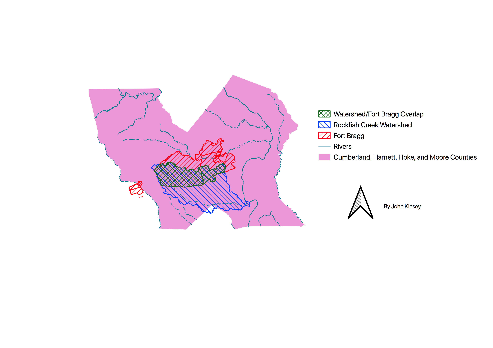
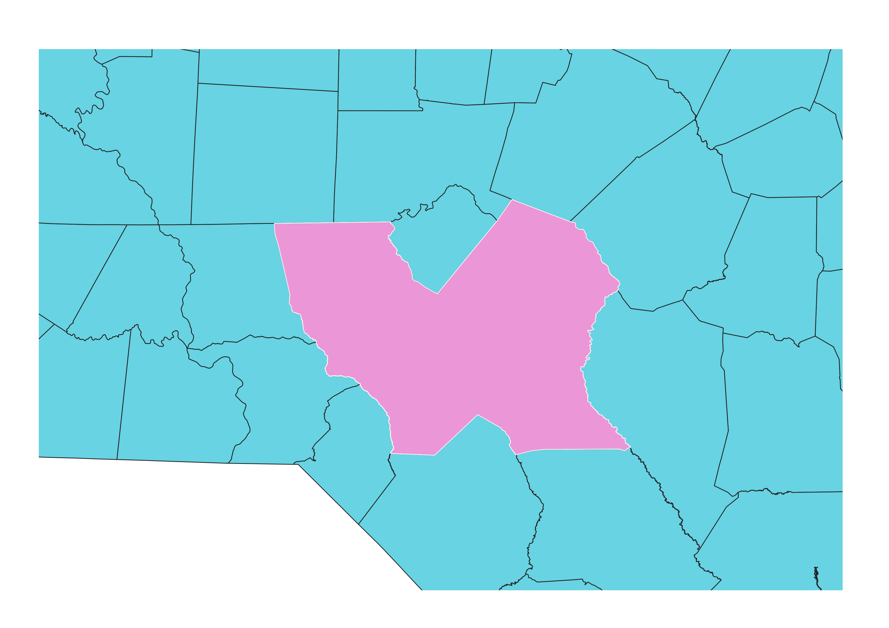
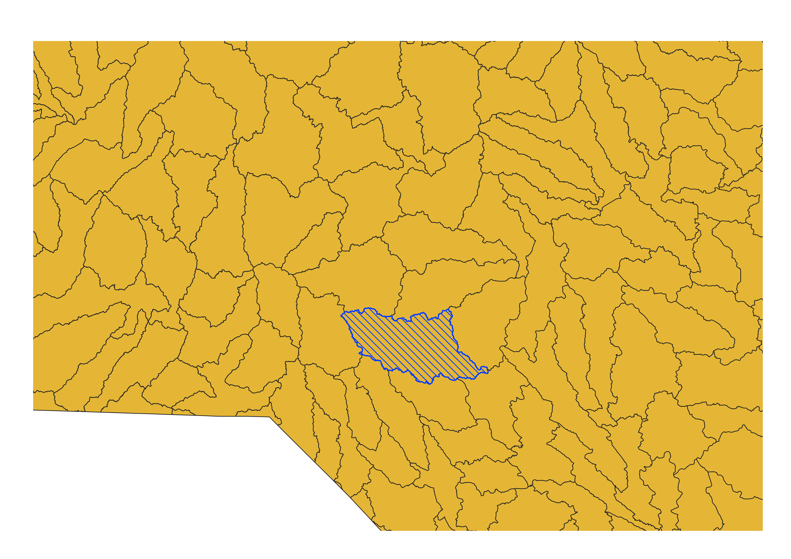
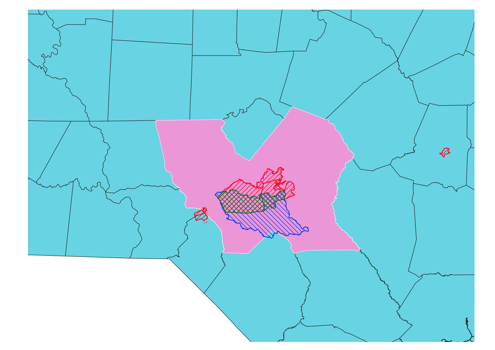

Homework 10: Vector Spatial Analysis
What area of Rockfish Creek Watershed is also occupied by Fort Bragg Military Base? Due to the fact that parts of Fort Bragg is situated on a natural reserve between rivers, it is crucial to understand how this particular watershed impacts the reserve and physical geography of the military institution. Geoprocessing tools to make this map include using the "dissolve", "intersect", and "clip" functions. From the results, we can see that the northern parts of the watershed are located within the natural reserves of Fort Bragg. The North Carolina Resources Wildlife Commission as well as the official GIS websites for watershed and river systems were used.




Data used for this project
Link to data regarding the boundaries of Fort Bragg
Watershed Source
River Source